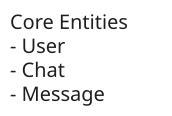
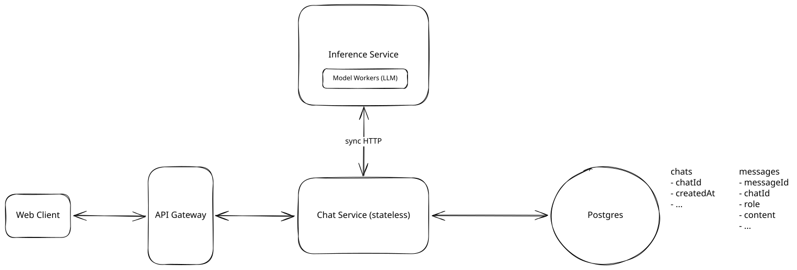
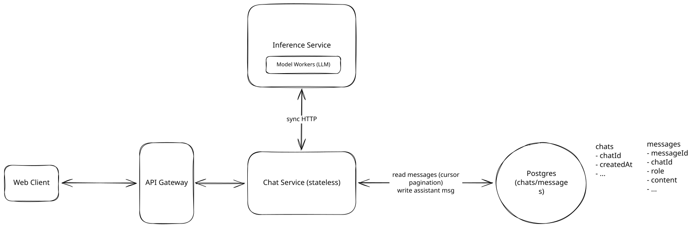
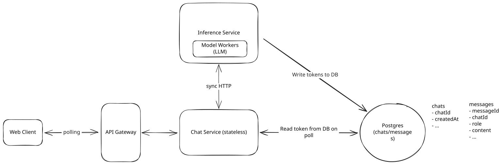
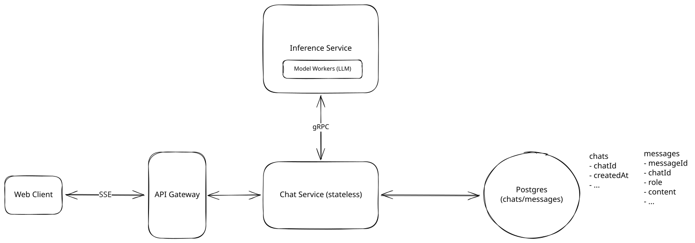
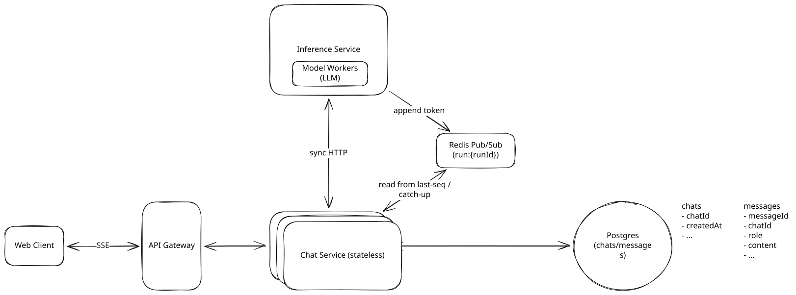
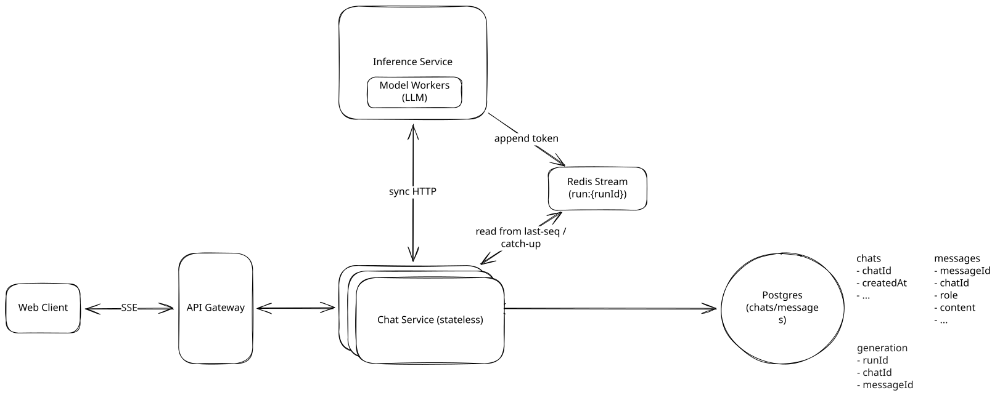
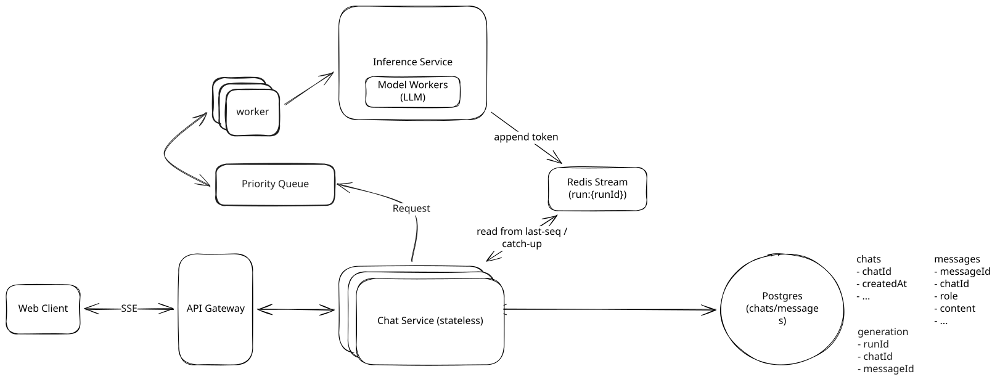

Common Problems
ChatGPT
Real-time Updates
Managing Long Running Tasks
Understanding the Problem
💬 What is ChatGPT?
Unless you've been living under a rock, you know what ChatGPT is. It's a conversational AI product where users send prompts in natural language and get responses streamed back from a large language model. Conversations are saved, so users can come back to an old chat and pick up right where they left off.
For this problem we treat the LLM as a black box we call, not something we train or run the internals of. All the design lives in the serving system around it, in how we stream tokens back fast, how we schedule scarce GPUs, and how we keep cost sane as conversations grow. We'll also scope this to text in, text out only, with no images, audio, or video, and no editing or branching of existing messages.
Functional Requirements
Core Requirements
- Users should be able to send a prompt in a chat and receive an AI-generated response.
- Users should be able to view past chats and resume a conversation, with the chat's prior context carried into the prompt.
Below the line (out of scope)
- Editing or branching existing messages.
- Image, audio, or video input and output (text only).
- Sharing chats or collaborating on a chat with other users.
- Custom GPTs, tool / function calling, and web browsing.
- Full-text search across a user's chat history.

Non-Functional Requirements
Non-functional requirements cover the properties of the system that matter to the user and the business.
ChatGPT feels broken if you stare at a blank screen for a few seconds after hitting enter, so latency to the first token matters more than total completion time. Because GPUs are the scarce, expensive resource here, the system has to be deliberate about who gets compute and when. ChatGPT serves a little over 200M daily active users at the time of writing, so that's the scale we'll design against.
With that framing, here are the requirements that actually shape the design.
Core Requirements
- The system should have low time-to-first-token (< ~500ms), with continuous, smooth streaming after that. A full response can take up to ~30 seconds to finish generating.
- The system should prioritize high availability over strong consistency for conversation state (~99.9%+). It's better to return an error or a degraded experience than to block the whole system on perfectly synchronized chat state.
- The system should scale under GPU-constrained capacity, with fair allocation across a tiered user base (200M DAU, ~20k prompts/sec at peak, ~120k concurrent in-flight streams).
Below the line (out of scope)
- Durability of every streamed token (we persist the final assistant message, not each chunk).
- Authentication, abuse prevention, and content moderation.
- GDPR, data residency, and privacy compliance.
- Monitoring, logging, alerting, and CI/CD.
Here's how it might look on your whiteboard:
Requirements
Adding features that are out of scope is a "nice to have". It shows product thinking and gives your interviewer a chance to help you reprioritize based on what they want to see. That said, it's very much a nice to have. If extra features aren't coming to you quickly, don't waste time, just move on.
The Set Up
Planning the Approach
Before designing anything, take a moment to plan. This is a product-style question, so we'll build the design up sequentially, going one by one through the functional requirements. There are only two of them, so the high-level design will be short, and that's intentional. The request path is almost boring, because the work that actually makes this problem interesting lives in the non-functional requirements, where we have to stream tokens back fast, schedule scarce GPUs, and keep cost under control. Those are what become our deep dives.
Defining the Core Entities
I like to begin with a broad overview of the primary entities. At this stage we don't need every column, just the nouns we'll reason about for the rest of the interview. We'll flesh out fields during the high-level design.
To satisfy our functional requirements, we'll need the following entities:
- User: An account on the platform. Carries the tier (free vs paid), which is going to matter a lot once we get to fairness and scheduling.
- Chat: A single conversation thread. Belongs to one user, groups an ordered sequence of messages, and carries a title and timestamps.
- Message: One turn in a chat, either a user prompt or an assistant response. Carries the chatId, a role (user or assistant), the content, and a token count.
In the actual interview, this can be as simple as a short list like this. Just make sure you talk through the entities with your interviewer to ensure you are on the same page. We'll introduce one more entity, a Generation, later once the deep dives actually need it, since it isn't something you'd naturally reach for this early.

Core Entities
As you move onto the design, your objective is to create a system that meets all functional and non-functional requirements. I recommend you start by satisfying the functional requirements and then layer in the non-functional requirements afterward. This keeps you focused and stops you from getting lost in the weeds.
API or System Interface
The API is the contract between the client and our system, and it's the bridge into the high-level design. We'll define one or two endpoints per functional requirement and keep moving.
First, a user starts a new chat. We use POST because we're creating a new Chat entity.
POST /chats -> { chatId }
Body: {}Next, the user sends a prompt and gets a response back. This is the one endpoint that isn't a plain request/response. The assistant message is streamed back token by token, and we return a runId, a handle for this in-flight response that the client uses to follow the stream. We use POST because we're creating a new Message on the server.
POST /chats/{chatId}/messages -> Message (streamed via SSE)
Body: {
content
}For the second functional requirement, we list a user's chats for the sidebar and load the messages for one chat. Both are GETs with cursor pagination, since a heavy user can have thousands of chats and a long chat can have thousands of messages.
GET /chats?cursor={cursor}&limit={n} -> Chat[]
GET /chats/{chatId}/messages?cursor={cursor}&limit={n} -> Message[]Notice the userId never shows up in a path or body. It comes from the session token or JWT, and chat ownership is checked server-side on every request. Passing userId in the body is a classic red flag, since anything the client sends can be forged. The streaming response uses SSE, which we'll justify in the deep dives, but the core CRUD surface is plain REST.
High-Level Design
We'll go one by one through the functional requirements. Both are short, and we're going to keep the design deliberately naive, with synchronous calls and no streaming or queues. The plan is to get a simple design that satisfies our functional requirements first, then layer on the complexity that satisfies our non-functional requirements through the deep dives. Starting with a working system and then breaking it is far better than starting with a "perfect" one that's hard to reason about.
1) Users should be able to send a prompt and receive an AI-generated response
When a user opens a chat, types a prompt, and hits enter, the client sends that prompt to our backend and eventually gets a response back. Let's lay out the minimum set of components to make that happen.

Send Prompt
- Web Client: The browser or mobile app where the user types prompts and reads responses. It's the chat UI.
- API Gateway: The entry point for all client requests. It handles authentication, rate limiting, and routes requests to the right service.
- Chat Service: A stateless service that owns chat and message persistence and orchestrates the call to the model. It's cheap to run and easy to scale horizontally, which matters because we'll want to scale it independently from the expensive inference layer.
- Postgres: Our system of record, holding the chats and messages tables. The data is simple rows keyed by chatId and userId, so honestly almost any database would work here. We reach for Postgres as a sensible default rather than because anything about the problem demands a relational store.
- Inference Service: Owns the GPU model workers that actually run the LLM. We treat the model itself as a black box that takes a prompt in and returns a completion. This is the expensive, GPU-bound part of the system, separated from the Chat Service so we can scale and schedule it on its own.
Here's how these interact when a user sends a prompt:
- The user types a prompt, and the client sends a POST request to /chats/{chatId}/messages.
- The API Gateway authenticates the request and forwards it to the Chat Service.
- The Chat Service writes the user's message to the messages table.
- The Chat Service makes a synchronous call to the Inference Service, which runs the prompt through the model and returns the full completion once it's done.
- The Chat Service writes the assistant message back to the messages table and returns it to the client.
The split between Chat Service and Inference Service is the one design decision worth dwelling on here. The chat tier is cheap and stateless, while inference is GPU-bound and expensive, and since we'll want to scale the two independently, we separate them now.
Let me briefly acknowledge the elephant in the room. This is fully synchronous, so the client sits on that HTTP call until the entire response is generated, and a long response can take up to 30 seconds. That's 30 seconds of blank screen, which violates our TTFT requirement and feels broken. On top of that, the Chat Service is calling a GPU worker directly with no admission control (nothing deciding which requests to accept versus turn away when the workers are already saturated), which falls apart the moment GPUs become the bottleneck. We'll fix the first problem with streaming and the second with a scheduling layer, both in the deep dives. For now, it works.
2) Users should be able to view past chats and resume a conversation with context carried across turns
Users expect to come back tomorrow, scroll their old conversations, open one, and keep going as if the model remembers everything. Two things have to happen here, a read path for past chats and context carry-over on the next turn.
We don't need any new services for this. We add the read endpoints off the existing Postgres tables and a context-loading step inside the Chat Service.

Chat History
For the read path:
- GET /chats returns the user's chats ordered by recent activity, cursor-paginated for the sidebar.
- GET /chats/{chatId}/messages returns one chat's messages, cursor-paginated so a long conversation doesn't load all at once.
For context carry-over, when the user sends a follow-up prompt on an existing chat:
- The Chat Service queries the messages table for the prior messages in that chatId, ordered by creation time.
- It builds the prompt by concatenating those messages (with their roles, user vs assistant) followed by the new user message.
- It sends that combined prompt to the Inference Service, just like the first turn.
- The new assistant message gets written back to the messages table, so the next turn can read it too.
This is the simplest thing that works. The model sees the whole conversation every turn, so it behaves like it remembers. But sending full history every turn has two obvious problems, since it breaks once a conversation grows past the model's context window and gets more expensive every turn as input tokens are billed per call. We'll tackle that with summarization and prefix caching in the deep dives.
That gets us a working system. It's simple, it satisfies both functional requirements, and it has exactly the bottlenecks our non-functional requirements warned us about. Let's go fix them.
Potential Deep Dives
With the functional requirements met, it's time to go back and earn the non-functional requirements. There's no single right set of deep dives here, or one correct order to tackle them in. In a real interview you'd have agreed on what matters with your interviewer when you outlined the non-functional requirements up front. These are the ones I'd expect to come up for this question, roughly in the order the design pushes you toward them, starting with streaming the response, then scheduling the GPUs, sharing them fairly, and keeping the cost from running away.
1) How do we stream tokens back fast, and keep the stream smooth?
Our synchronous design makes the user wait up to 30 seconds for a blank screen to turn into a full answer. The non-functional requirement asked for two things, a low time-to-first-token and a continuous, smooth flow after that, and those are two different requirements that fail in two different ways. The first is about how quickly the very first token reaches the screen, which is a pure latency problem. The second is about whether the rest of the stream arrives in order and without visible gaps, even as Chat Service instances come and go underneath us, which is a reliability problem. The mechanisms that solve them have almost nothing to do with each other, so we'll take them one at a time. First, how do we get that first token back fast?
Pattern: Real-time Updates
Streaming LLM tokens is a textbook realtime updates problem. The browser needs a live push channel from the server, and the backend needs a way to get each token from the worker that generated it over to whichever server is holding the user's connection. The same transport options (long-polling, SSE, WebSockets) and the same backend fanout show up in live comments, collaborative editing, and live dashboards.
Approach
The client fires off the prompt and then polls a status endpoint every few hundred milliseconds asking "any new tokens yet?" The server answers with whatever has been generated since the last poll. For that to work at all, the tokens the inference worker produces have to be sitting somewhere the polled endpoint can read them, so we need a buffer in between the worker and the Chat Service. We could buffer in Redis, which is fast but drops everything if it restarts, or write each chunk to Postgres, which is durable but turns one response into hundreds of tiny writes against our system of record. Neither is appealing, and we haven't even reached the polling itself yet.

Polling
Challenges
Polling is bad for the exact metric we care about. Time-to-first-token is gated by the poll interval, so a 500ms poll adds up to 500ms of dead time before the first token can even appear. It's also wasteful. At 120k concurrent streams, polling every 300ms is 400k requests per second, and the overwhelming majority of those come back empty. And the experience is lumpy, since instead of tokens flowing one at a time the user gets them in batches on each poll, which kills the smooth typing illusion that makes the product feel alive. The fix for all three problems is the same idea, stop asking and let the server push.
Approach
Instead of the client asking over and over, we open one persistent connection and let the server push tokens the instant they exist. On the browser side that connection is a WebSocket between the client and the Chat Service instance that handled the prompt, a full-duplex channel that stays open for the life of the generation.
That covers the browser, but the tokens are produced on a GPU worker in the Inference Service, a separate tier, so the Chat Service still needs a way to receive them as they're generated. This is where gRPC earns its place. gRPC is a framework for service-to-service calls that runs over HTTP/2, and the feature we care about is server-streaming, where the Chat Service makes a single call to the worker and the worker streams back a sequence of messages over that one open connection, one token at a time, until it's done. A plain request/response call wouldn't do, because it would force the worker to buffer the entire 30-second completion and hand it back in one lump, which is the blank-screen problem all over again.
We reach for gRPC rather than something like Websockets on this internal hop because between our own services we want HTTP/2's efficient binary framing and multiplexing plus a typed contract from protocol buffers, whereas SSE is a text protocol meant for the browser edge. So the picture is two streams chained through one Chat Service instance, the worker streaming tokens to it over gRPC, and it relaying each one down the WebSocket to the browser. Time-to-first-token is now bounded by how fast the model produces the first token rather than by any poll interval, and the flow is smooth because each token is forwarded the moment it arrives.
Challenges
This works well, and for plenty of realtime features it's the right call. But it's more than this particular job needs. A WebSocket is bidirectional, and during a generation we only ever push one way, from server to client. The client doesn't send anything back over that channel once the prompt is in flight. We'd be taking on the overhead of a stateful, two-way protocol, the upgrade handshake, the per-connection bookkeeping, and making sure every load balancer and proxy in the path actually speaks WebSocket, all to use a single direction. When the traffic is one-directional, there's a lighter option built for exactly this shape.
Approach
Server-Sent Events are purpose-built for one-way server-to-client streaming. The client opens an ordinary HTTP request with an EventSource, the server holds that response open and keeps writing data: events to it as tokens are produced, and the browser fires an event for each one. It runs over plain HTTP with no protocol upgrade, so every proxy and load balancer in the path already handles it, and the browser starts rendering on the very first event. As a bonus, the EventSource API reconnects on its own when a connection drops, which we'll lean on in a moment.
For pushing tokens to a browser this is the sweet spot. We get the same instant first token and smooth flow as a WebSocket without paying for a bidirectional channel we never use. The backend is unchanged from the WebSocket option, the Chat Service still receives tokens from the worker over the gRPC stream and relays them, only now it forwards over SSE instead of a WebSocket.

SSE + gRPC
Challenges
Being one-directional is the whole point, but it does mean anything the client needs to send mid-stream, most importantly a "stop generating" signal, travels over a separate plain HTTP request rather than back up the stream. That's a clean separation more than a real cost, and we'll use it for cancellation later. The one quirk worth knowing is that SSE over HTTP/1.1 counts against the browser's six-connections-per-domain limit, which is a non-issue over HTTP/2 where everything is multiplexed onto a single connection.
SSE gets that first token onto the screen in milliseconds, which settles the responsiveness half of the requirement. But look closely at what we glossed over. We kept saying "the server holds the response open and writes tokens to it," as if one fixed server reliably sits between this user and the model for the full 30 seconds. Our Chat Service tier is stateless, horizontally scaled behind a load balancer, and redeployed all day long. The moment you take that seriously, two questions appear that the transport choice never touched. How does a token actually get from the worker that produced it over to whichever Chat Service instance is holding this user's SSE connection right now? And what happens to the stream when that instance is replaced mid-generation?
This is the second half of the requirement, keeping the stream smooth and unbroken from the first token to the last.
Approach
This is the arrangement we've quietly been assuming, so let's make it the starting point and watch where it breaks. The Chat Service instance that received the prompt owns the entire flow. It holds the gRPC stream from its assigned worker on one side and the client's SSE connection on the other, relaying each token straight through as it arrives, with one Chat Service instance, one client, and one worker wired together for the life of the generation.
Challenges
This pins a specific client to a specific Chat Service instance for a full 30 seconds, which fights everything we like about a stateless Chat Service tier. Picture a routine deploy, something we might do a dozen times a day. Normally we replace pods one at a time and nobody notices, but now every pod is holding thousands of in-flight 30-second streams. We either kill them all mid-sentence and make those users watch their answer die, or we block the deploy until every last stream drains. Autoscaling removing a pod, or a pod simply crashing, forces the same ugly choice. On top of that, it couples the Chat Service instance directly to one inference worker, which falls apart the instant we put a queue and scheduler between them in the very next deep dive. We need to decouple who is generating the tokens from who is holding the connection, so that any Chat Service instance can serve any stream.
Approach
We can decouple the two sides by putting something in between them rather than wiring a Chat Service instance straight to a worker. Concretely, we add a pub/sub between the workers and the Chat Service tier, keyed by a runId we mint when the generation starts. The inference worker publishes each token to the channel for that runId, and whichever Chat Service instance is currently holding the client's SSE connection subscribes to that channel and forwards tokens down to the browser. The worker no longer cares which Chat Service instance is connected, and the Chat Service no longer cares which worker is generating. They rendezvous on the runId. A client can now reconnect to a different Chat Service instance and that new instance just subscribes to the same channel, so a deploy or a crash no longer kills the stream outright. Redis Pub/Sub is the natural fit.
One decision is worth making explicit, which is what we actually publish on the channel. We publish each token as a delta, not the full message-so-far. Republishing the cumulative text on every token would be quadratic, since a 4,000-token answer would re-send a steadily growing prefix 4,000 times, and at 120k concurrent streams with answers up to 30k tokens that bandwidth is a non-starter. Deltas put each token on the wire exactly once.

Pub/Sub
Challenges
Deltas over Redis Pub/Sub have a sharp edge, and it happens to be the one thing our smoothness requirement cares about most. Pub/Sub is fire-and-forget. It delivers a message only to the subscribers connected at the instant it's published, and it buffers nothing. So in the window between the old Chat Service instance dropping and a new one subscribing, which is exactly what a deploy or a crash creates, the worker keeps publishing tokens and there is simply no subscriber to receive them. Those tokens are gone for good. The user is left with a hole in the middle of their answer that doesn't fill in until generation finishes and the client refetches the completed message. Since deploys bounce connections constantly, this is not a rare edge case, and a chunk of the response visibly missing for twenty seconds is precisely the broken-feeling experience the requirement exists to prevent. We bought decoupling and gave back the guarantee that the stream is actually continuous.
Approach
Keep the decoupled, runId-keyed channel, but swap the fire-and-forget Pub/Sub for a Redis Stream, which is an append-only log that actually remembers its entries. The worker XADDs each token delta to the stream for that runId. The Chat Service instance reads with a blocking XREAD starting from the last entry ID this client has already seen, forwards new entries down the SSE connection, and keeps track of the latest ID as it goes.

Stream
The reconnect case is now clean. When a client drops and reconnects to a different Chat Service instance, that instance resumes its XREAD from the client's last-seen ID, replays exactly the entries that were missed during the gap, and then continues live. No hole, no waiting until the end. We keep the cost bounded with MAXLEN, so each stream retains only a recent window of tokens rather than growing without limit, and we give the stream a short TTL so it's reclaimed once the generation is done. Memory stays capped, each token still crosses the wire once because we're sending deltas rather than snapshots, and the stream is short-lived working state rather than a second copy of history.
To be clear about durability, the stream is not our system of record. When generation finishes, the worker writes the complete assistant message to Postgres, and that persisted message is the durable copy a client can always refetch. The Redis Stream exists only to make the live stream gapless across reconnects, which is why per-token durability stays below the line even though we briefly retain tokens here.
After applying both "Great" solutions, here's the full flow on a send:
- The Chat Service persists the user's message and mints a fresh runId, returning it to the client right away.
- The Chat Service hands the assembled prompt and that runId off to the Inference Service, which lines up a worker to start generating (we'll put a queue here in the next deep dive).
- The client opens an SSE connection for that runId, and the load balancer routes it to any Chat Service instance.
- That Chat Service instance starts a blocking XREAD on the runId stream, from the beginning for a fresh connection or from the client's last-seen entry ID on a reconnect.
- The inference worker generates tokens and XADDs each one to the runId stream.
- The Chat Service instance reads new entries, forwards them down the SSE connection, and the browser appends them. If the connection drops, the browser reconnects, lands on some Chat Service instance, and that instance replays from the last-seen ID before continuing live.
Stream
That runId we keep minting deserves to be a first-class entity. A Generation is a single inference attempt for a message, carrying the runId, the chatId and messageId it belongs to, a status that moves through queued, streaming, and then done, cancelled, or failed, the model that served it, and the input and output token counts we'll lean on for billing and quotas. This is the extra entity we flagged back at the entities stage and deferred, since nothing in the basic request path needed it. Now that a run has its own lifecycle and its own stream, it's earned its place, and the scheduling and cancellation work still ahead is really a set of operations on a Generation rather than on a message.
2) How do we route and schedule generation requests across GPU workers?
GPUs are the bottleneck, full stop. They're the most expensive resource in the system and the one in shortest supply, so how we route work to them decides both our cost and our latency under load. It's worth pausing on just how expensive. A frontier model is far too big to fit on a single GPU, so its weights get split across a whole box of them, and serving 120k concurrent streams means standing up thousands of those boxes. That puts you at tens of thousands of GPUs for this one model, and the labs running systems at this scale spend staggering amounts on compute, easily hundreds of millions to billions of dollars a year. When the hardware costs that much, every percentage point of utilization you leave on the table is real money, which is exactly what makes the scheduling decisions in this section worth the effort.
Reality check. For a real-world anchor, OpenAI's reported inference compute ran around $1.8B in 2024 and has climbed into the multiple billions since. You don't need the exact figure in an interview, but the order of magnitude is the whole point, since a bill that size is what justifies all the engineering effort we're about to spend squeezing more out of each GPU.
Pattern: Managing Long Running Tasks
A single generation can run for 30 seconds on a scarce, expensive worker. That's the long-running tasks pattern, where instead of tying up the request thread waiting, you hand the work to a pool of workers through a queue and let them pull when they have capacity. The same queue-plus-worker-pool shape shows up in video transcoding, batch ML jobs, and any system where the unit of work is too heavy to do inline.
Approach
The Chat Service calls an inference worker directly for each request and hopes that worker has spare capacity, just what our high-level design does.
Challenges
Frankly, at this scale this falls apart fast. There's no admission control, so when traffic spikes to 20k prompts/sec the Chat Service tier just keeps slamming workers that are already saturated. There's no good way to know which worker has room, so you either overload some and idle others or build a side-channel to track capacity (at which point you've reinvented a scheduler badly). And a single very long prompt can hog a worker while short prompts pile up behind it. Utilization is poor and latency is unpredictable, which is the opposite of what we want from our most expensive hardware.
Approach
Put a request queue between the Chat Service and the GPU workers. The Chat Service enqueues a generation request (prompt plus runId) and returns fast. Workers pull from the queue when they have capacity, generate, and append tokens to the runId stream from deep dive 1. This is pull-based, so a worker only takes new work when it can actually do it.
What the queue really buys us is room between a spiky front end and a fixed-rate back end. Prompts arrive in bursts, up to 20k per second at peak, but the worker pool can only work through requests as fast as its GPUs allow, which is a much steadier and lower rate. With nothing in between, a burst either overwhelms the workers or gets dropped on the floor. The queue absorbs the spike and lets it drain at whatever pace the workers can sustain, so a surge becomes a few seconds of extra wait instead of a pile of errors.
Queue
Challenges
This handles bursts much better, but a plain queue still leaves two problems. The queue is unbounded, so while it absorbs a temporary spike, sustained demand above what the workers can handle just makes the line grow without limit, and a user can end up sitting behind thousands of queued requests with no idea whether their answer is two seconds away or two minutes. We need a way to cap that wait and tell the user honestly when we're too busy, rather than leaving them on a spinner forever. On top of that, the queue still treats each generation as an independent job on a worker, which leaves a lot of GPU performance unclaimed. GPUs are most efficient when they process many sequences together, and one-request-per-worker-slot doesn't exploit that. We're not yet getting the utilization that justifies a GPU fleet this expensive.
Approach
Keep the queue and pull-based workers, then add the real win for GPU efficiency, continuous batching. Instead of running one sequence at a time, the worker generates for many sequences together, advancing every sequence in the batch by one token per forward pass, and it adds and drops sequences from the batch on the fly so a finished generation is immediately replaced by a queued one. Keeping the batch full is what keeps the GPU busy, and it's the single biggest lever on utilization, enough that one replica can hold dozens of sequences in flight instead of one. Why batching pays off this much comes down to how a GPU actually spends its time, which is worth its own aside just after these options.
Then add backpressure so the system degrades predictably instead of melting. The queue has a bounded depth and an admission policy, so when it's too deep, we stop pretending we can keep up and start rejecting, deferring, or shedding requests rather than letting latency grow without bound. The nice property here is that capping the depth also caps the wait, since an admitted request can only ever be a bounded distance from the front. So a user is either served within that bound or, if we're past it, gets a fast "we're at capacity, try again" rather than being left on a spinner forever. A quick honest no beats an endless maybe.
Putting it together:
- The Chat Service enqueues a generation request with its runId and a token-cost estimate.
- Admission control checks queue depth. If we're over the limit, the request is shed or deferred (see the fairness deep dive for who gets shed first).
- A GPU worker pulls the request and folds it into its running batch via continuous batching.
- The worker streams tokens to the runId stream as the batch generates.
- When generation finishes (or is cancelled), the worker drops the sequence from its batch and pulls the next request.
Challenges
The cost is complexity in the serving layer, which now has to juggle variable-length sequences entering and leaving a batch, and a batch of wildly different prompt lengths can still leave some GPU work idle. The inference framework handles most of this for you, but it's a meaningfully more complex worker than "run one prompt." Backpressure also forces a product decision about who gets rejected when we're full, and that's not something we can hand-wave, which is exactly what the next deep dive is about.
Why batching wins, in one analogy. A GPU keeps the model's weights resident in its high-bandwidth memory, but the compute units can't do math on them there. They work out of a tiny pool of on-chip memory that's nowhere near big enough to hold billions of weights, so every forward pass has to stream the entire weight set from high-bandwidth memory through the compute units just to produce a token. Picture the weights as parts in a warehouse and the compute as a tiny workbench. The parts never leave the building, but to build anything you still have to haul the full set from the warehouse over to the bench. For a single token you make that whole haul and then do a trivial amount of assembly, one vector's worth of math, so the bench sits idle most of the time waiting on the next load. That's what people mean when they call token generation memory-bandwidth bound.
Batching makes each haul pay off. Bring the same parts to the bench once, then fill many orders before sending them back. The worker runs a batch of sequences together and each forward pass advances all of them by one token, so we stream the weights once and get dozens of tokens out of it instead of one. The "continuous" part keeps the batch full. A fixed batch would wait for every sequence to finish before starting the next, but a one-line reply can sit next to a 2,000-token essay, so the batch drains and the GPU drifts back to idle while the slowest sequence runs on alone. Continuous batching evicts a sequence the moment it finishes and slots in a queued one, which is how production inference servers like vLLM and TGI keep a replica busy with dozens of sequences at once.
3) How do we keep heavy users from monopolizing GPUs while giving paid tiers a better experience?
This is a multi-tenant system sharing one scarce GPU pool, and the costs are wildly uneven. One user firing a 30k-token prompt burns far more compute than a hundred users sending one-liners. We need fairness across users so nobody can starve everyone else, and we need business priority across tiers so paying customers get a better experience when things are tight. A flat requests-per-minute cap can't express either of those.
Approach
The crudest fix is a single global rate limit, one requests-per-minute cap applied to everyone (or any equally blunt fixed rule, like a flat concurrency cap). The mechanism is the standard API rate limiter. It sits at the API Gateway, or in the Chat Service if you want per-account context, and because our app tier is stateless and horizontally scaled, the counter has to live somewhere shared, which in practice means Redis. A typical implementation keys a token bucket or a fixed-window counter by user or IP, does an atomic increment-and-check in Redis on each request, and returns a 429 once the count crosses the limit for the current window. It's cheap, well understood, and for plenty of APIs it's exactly the right tool.
Challenges
This solution sucks at this problem for two concrete reasons. First, it measures the wrong thing, because requests aren't the cost, tokens are. A user sending one giant 30k-token prompt sails under a request cap while consuming more GPU than a hundred short prompts that the cap would happily reject. Second, it's tier-blind, so a paying customer and a free user hit the same wall, and we've thrown away the lever that's supposed to make the paid product feel better under load.
Approach
The fix is the same machinery as before, just keyed differently. Instead of one global counter, we key the limiter by userId, so every user gets their own bucket and one user's flood can't drain everyone else's capacity. For a concurrency cap, that's a per-user counter in Redis, incremented when a generation starts and decremented when it finishes or is cancelled. Before admitting a new generation we check that user's counter, and if they're already at their cap we reject or queue the request until one of their in-flight generations frees up. The only thing that really changed from the global limit is the key, from one shared bucket to one bucket per user, but that's the change that stops a single heavy user from starving the pool.
Challenges
This fixes the starvation problem, one user can no longer monopolize the pool, but it's still counting requests, not cost. A per-user cap of "5 in-flight generations" treats five 50-token replies the same as five 30k-token monsters, even though the latter is orders of magnitude more GPU. And on its own it still doesn't give paid tiers a meaningfully better deal. We need to meter actual cost and bake tiers into the scheduling.
Approach
The fix is to meter what's actually scarce, which is tokens (or estimated compute), not request count. When a generation comes in, we estimate how expensive it'll be from the prompt length and the requested max output, check that against how much of the user's token budget is left, and reject or delay it if they're over. The budget refills over time, the way an API quota does. Now the thing we're counting is the thing we're actually paying for.
Then layer tier priority on top. Paid users get bigger budgets, higher concurrency limits, and higher priority in the queue from deep dive 2. Concretely, the queue becomes tier-aware: paid requests are pulled ahead of free requests when workers free up. Under normal load everyone's served fast and nobody notices; the tiers only diverge when capacity is tight, which is exactly when paying customers should feel the difference.
Finally, make degradation explicit. When demand still exceeds capacity even after admission control, free users are throttled, deferred, or downgraded (for instance, routed to a smaller, cheaper model) before paid users feel anything. Fairness-across-users (no single user starves others) and priority-across-tiers (paid beats free) are two different goals, and the design handles them with two different mechanisms, per-user cost budgets for the first and tier-weighted queueing for the second.

Priority Queue
Challenges
Estimating cost up front is imperfect, you don't know the true output length until generation finishes, so budgets work off an estimate and reconcile against actuals afterward. That's fine for quota accounting but means a user can occasionally overshoot a soft limit. There's also a fairness-vs-utilization tension, since strict tier priority can leave free users starved for long stretches during sustained peaks, so in practice you reserve some floor of capacity for free traffic rather than letting paid fully crowd them out. These are policy knobs that product and infra tune together.
4) As conversations get longer, how do we control inference cost without making the assistant feel forgetful?
Recall our high-level design replays the entire conversation into the model on every turn. That's the simplest thing that works, and it's also the expensive mistake, so rather than dwell on it as its own option we'll treat it as the baseline we're fixing. A 50-turn chat at ~500 tokens per turn means we're shipping ~25k input tokens on the next prompt, and since input tokens are billed per call, cost and latency climb with every single turn. Worse, it has a hard ceiling. Once the conversation grows past the model's context window the request simply can't fit. Real assistants usually just surface this, telling you the chat has gotten too long rather than failing silently, but leaning on that as your only answer means the product quietly stops working for exactly the power users who chat the most. It's fine for a five-turn chat and untenable as a general approach. What we want is to keep the assistant feeling like it remembers without paying to re-read the whole transcript each time.
Approach
Keep only the most recent N turns and drop everything older. The prompt stays a fixed, bounded size no matter how long the conversation runs. Concretely, this is just a bounded read against the messages table instead of pulling the whole thread.
SELECT * FROM "messages"
WHERE "chatId" = $1
ORDER BY "createdAt" DESC
LIMIT $2We pull the newest N rows, then flip them back into chronological order before assembling the prompt.
Challenges
It bounds cost, but the assistant becomes obviously forgetful. Reference something from earlier in a long chat and it has no idea what you're talking about, because that turn was dropped. For a product whose whole appeal is "it remembers the conversation," abrupt amnesia at turn N+1 is a bad look. We want bounded cost without the visible memory loss.
Approach
The biggest lever is prefix caching. Across turns in a single conversation, most of the prompt is identical from one turn to the next, since the system prompt and everything already said in the chat all repeat. Modern inference servers can cache the model's intermediate state (the KV cache) for a stable prompt prefix and reuse it instead of recomputing it from scratch every turn. Only the tail of the prompt, the newest message, actually changes, so prefix caching cuts both the cost and the latency of processing the input, which helps our TTFT goal directly. It pairs naturally with the sticky-ish routing we'd already want, sending a conversation's turns to a worker that already has its prefix warm.
The catch is that the cache has to be managed. A worker has finite memory and can only keep so many conversations' prefixes warm at once, so prefixes are evicted on something like an LRU basis. A conversation that goes quiet and comes back later finds its prefix cold and pays full price to rebuild it on that next turn. This is exactly why the routing matters, since scattering one conversation's turns across workers means none of them ever stays warm.
Prefix caching makes re-reading the history cheap, but it doesn't move the hard ceiling, because a conversation can still outgrow the context window no matter how cheaply we process it. That's where a rolling summary comes in. Keep the most recent turns verbatim and compress older history into a running summary, so the prompt becomes the system prompt, then the summary of older turns, then the last few turns word-for-word, and finally the new user message. Recent context, where most follow-ups point, stays exact while older context is preserved in compressed form, so the assistant still remembers the gist of a long conversation without carrying every word. The summary updates in the background as the conversation grows, folding the oldest verbatim turns in as they age out. The two levers complement each other, with the summary keeping the prompt inside the window and prefix caching keeping the stable part cheap to process.
You can stack one more lever if needed, like retrieving only the older facts relevant to the current turn (instead of summarizing everything), or putting hard caps on extremely long chats for free-tier users (tying back to the fairness deep dive).
Challenges
Summarization isn't free, it's an extra (cheaper) model call, and a summary can lose a detail that turns out to matter later, so there's a real quality-vs-cost tension. The guiding principle is to protect the most recent turns and the most important user context first, and accept some lossiness on old history. Prefix caching also depends on the prefix actually staying stable; if we rewrite the summary every turn, we invalidate the cache, so we update it on a slower cadence to keep the prefix warm. Every cost lever here trades a little answer quality or memory fidelity for a lot of cost, and the design should spend that tradeoff on old, low-value context rather than recent, high-value context.
Cancelling a run and reclaiming the GPU
The one operation on a Generation we haven't shown yet is cancellation, and it's the clearest payoff for having made the run first-class. When the user hits stop, the client makes a plain HTTP call to POST /chats/{chatId}/runs/{runId}/cancel, exactly the side-channel we set aside when we chose SSE. The Chat Service flips that Generation's status to cancelled and publishes a cancel signal on a control channel keyed by the runId. The worker checks that channel between token batches, and the moment it sees the signal it drops the sequence and stops generating. This matters more than it first sounds. A cancelled 30-second generation that keeps running is pure wasted GPU, and GPU is the scarcest, most expensive thing in the whole system, so reclaiming it the instant the user stops caring is real money back.
Worth being clear that closing the tab is not a cancel. We built the Redis Stream and SSE reconnect precisely so a dropped connection isn't read as the end of a run, and like ChatGPT we keep generating in the background. The user can reopen the chat and reconnect to the stream, or just refetch the finished message from Postgres once it's done. Cancellation has to be an explicit signal from the user, never an accident of the network.
After applying the "great" solutions, the design has grown from the naive synchronous version into something that streams fast and stays smooth, schedules GPUs efficiently, shares them fairly, and keeps cost in check. Here's roughly how it all fits together:
Final
Some additional deep dives you might consider
There's plenty we couldn't fit here. A few more directions worth thinking through on your own:
- Safety and moderation: We put content moderation below the line to keep the focus on serving, but plenty of interviewers will want to see it. The usual shape is a cheap classifier on the prompt on the way in, and a second pass on the output as it streams. The output pass is where it gets tricky, because you've usually already streamed some tokens to the user by the time the check trips, so you have to decide whether to moderate in chunks before flushing each one or pull the message back after the fact.
- Why one model needs a whole box of GPUs: We said the weights get split across a whole box of GPUs without saying how. A frontier model's weights don't fit in a single GPU's memory, so you split them across GPUs, either with tensor parallelism where each GPU holds a slice of every layer, or pipeline parallelism where each GPU holds whole layers and hands off to the next. Both lean on fast interconnects, NVLink between GPUs in a box and InfiniBand across boxes, and that interconnect can become its own bottleneck.
- Speculative decoding: For some interviews, especially at the senior and staff level, you'll go much deeper into inference internals, and this is one of the levers worth knowing. Because decode runs one token at a time, a small cheap "draft" model can guess the next few tokens and the big model verifies all of them in a single forward pass. When the draft guesses right you get several tokens for the cost of one step, a real win for both time-to-first-token and throughput.
- Cheaper requests through routing and caching: Not every prompt needs the biggest model. Routing simple queries to a smaller model, and caching responses for semantically similar prompts (keyed off an embedding rather than the exact string), both cut cost without the user noticing. This pairs naturally with the tiered fairness deep dive, where free traffic is the first to get routed down.
- Multimodal input and cross-chat memory: We scoped to text in, text out. Real ChatGPT also takes images and audio, which changes tokenization and bloats the prefill, and it remembers facts about you across separate conversations. That cross-chat memory is a retrieval problem, embedding past messages and pulling the relevant ones into the prompt, rather than the single-conversation summarization we did here.
What is Expected at Each Level?
Ok, that was a lot. You may be thinking, "how much of that is actually required from me in an interview?"
Mid-level
For this question, a mid-level candidate will have clearly defined the API endpoints and data model and landed on a working synchronous high-level design that handles sending a prompt and viewing past chats with context carried across turns. I want to see them recognize that a 30-second blank screen won't fly and reach for a push-based streaming model like SSE, even if it takes some prompting. They should understand that GPUs are the bottleneck and at least propose putting a queue in front of the workers, though they may not get to continuous batching or backpressure on their own.
Senior
For this question, senior candidates are expected to speed through the high-level design so they can spend time on at least 2 of the streaming fanout, GPU scheduling, and fairness deep dives in detail. You should be able to articulate the SSE-vs-WebSocket choice from the one-way nature of token streaming, and the queue-plus-continuous-batching tradeoff for GPU utilization. I also expect a senior candidate to recognize that cost grows with conversation length and to propose summarization or truncation, even if they don't reach prefix caching unaided.
Staff+
For a staff+ candidate, expectations are high regarding depth and quality of solutions, particularly for the complex scenarios discussed above. Great candidates drive 3+ of the deep dives with real depth and bring the GPU economics into the conversation unprompted, the back-of-envelope that ~120k concurrent streams means tens of thousands of GPUs and a seven-figure daily bill, which is what justifies continuous batching and backpressure in the first place. They reach prefix caching for context cost on their own and cleanly separate fairness-across-users (cost-aware per-user budgets) from priority-across-tiers (tier-weighted queueing), which is a distinction weaker candidates blur. The hallmark is insight beyond the textbook, where a staff+ candidate leaves the interviewer understanding something new about serving LLMs at scale, whether that's continuous batching, KV-cache reuse, or how degradation should fall on free traffic first.
Worth calling out that at this level interviewers often expect the more esoteric inference trivia too, things like speculative decoding. It's become widespread enough that a practicing engineer is assumed to have picked it up, so it's past the "curiosity" threshold and doesn't get the pass that, say, not knowing geohashes might get you just because you've never worked on that kind of problem.
Test Your Knowledge
Answer the question below to find your gaps.
Question 1 of 15
Why does the design choose Server-Sent Events over WebSockets for pushing tokens to the browser?
1
SSE lets the client send a stop signal back up the same channel
2
Token streaming during generation is one-directional, so a bidirectional channel is overhead the job never uses
3
WebSockets count against the browser's six-connections-per-domain limit, while SSE stays exempt from it even when running over HTTP/1.1
4
WebSockets cannot stream incrementally